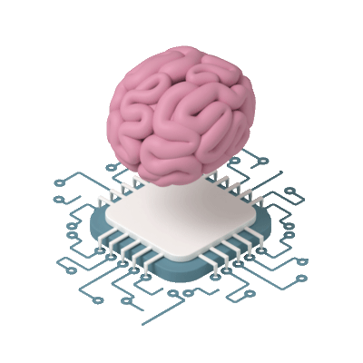
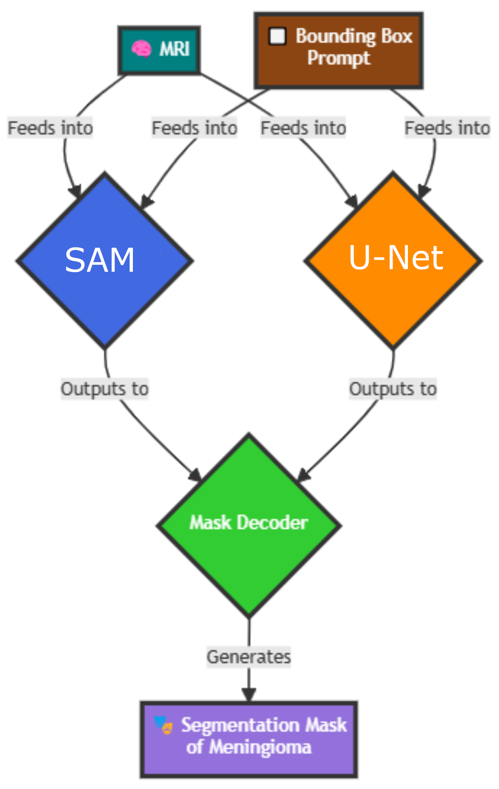
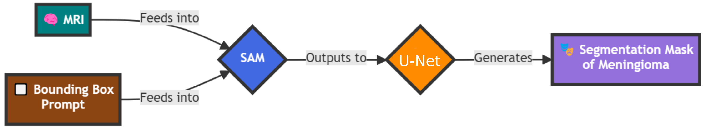
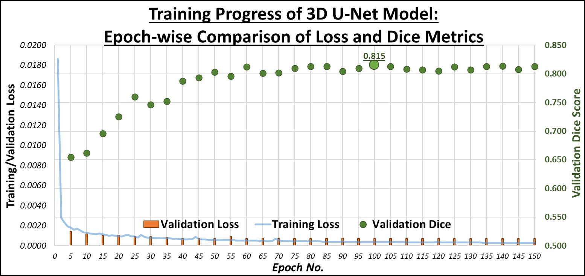
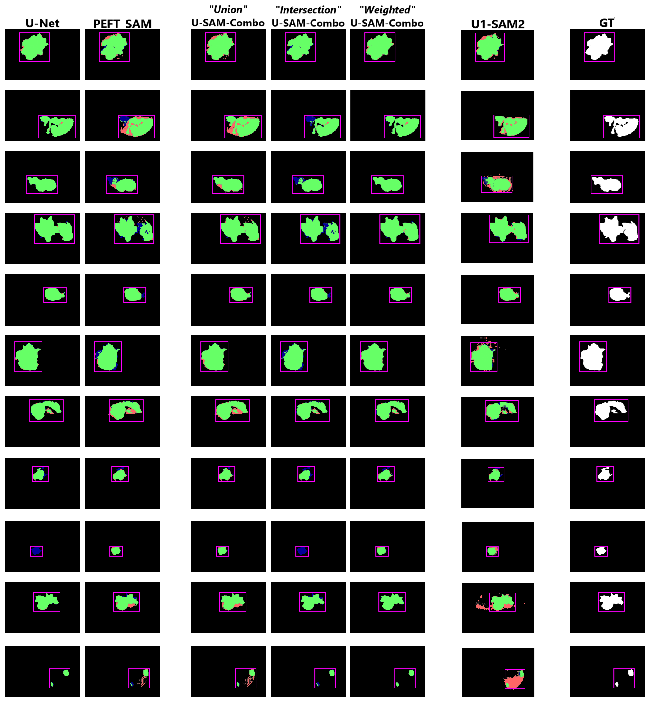

🧠 U-SAM for Brain MRI 🧠
A Hybrid Approach for Intracranial Meningioma Segmentation with SAM and U-Net
By Cassandra Wallace
⟱
➤ Introduction and Project Goals
Welcome to U-SAM, a hybrid approach to medical image segmentation. Our innovative framework, U-SAM,
synergises the powerful capabilities of the Segment Anything Model (SAM) with the precision of U-Net
architectures. This unique combination is driven by our research question:
Can the integration of U-Net with SAM improve accuracy in intracranial meningioma segmentation
for brain MRI, relative to Vanilla SAM on the same task?
At the heart of U-SAM lies the philosophy of "two brains working together". By leveraging SAM's general
segmentation prowess alongside U-Net's specialisation in capturing intricate spatial details, we aim to
create a more robust solution for medical image analysis. This collaboration not only seeks to harness the
individual strengths of both models but also addresses the inherent limitations each faces when applied to
intracranial meningioma segmentation.
➤ Design and Implementation
U-Net Architecture
Our 3D U-Net architecture is adapted by the Optimised U-Net proposed by Futrega et al. (NVIDIA), which introduces
deep supervision through additional decoder levels closer to the output. This enhancement improves gradient flow,
significantly boosting segmentation accuracy.
While PEFT-SAM operates on a slice-by-slice basis, U-Net processes full 3D volumes, leveraging the spatial context
inherent in entire datasets. Unlike SAM, which provides consistent outputs for identical inputs, U-Net's predictions
can exhibit variability, showcasing its adaptability. We trained U-Net with the same hyperparameters and loss function
strategy as PEFT-SAM, ensuring a fair comparison. Notably, during U-Net training, all parameters were updated, as opposed to
the limited fine-tuning applied to PEFT-SAM's mask decoder.
To ensure an equitable comparison between these models, we adjusted the U-Net segmentation process to account for the
start and end points of the tumour volume within the axial plane. This emulation of SAM's bounding box prompt allows for
a more balanced evaluation. Future research could explore the potential benefits of incorporating bounding boxes into U-Net's
input channels, enhancing its performance further.
U-SAM-Combo
The U-SAM-Combo architecture harnesses the complementary strengths of PEFT-SAM and U-Net. In this framework, the input MRI is
independently processed by both models, with their binary mask outputs merged to produce the final segmentation mask. We explored
three combination strategies:
- Union: This strategy aggregates predictions from both models, maximising coverage by simply merging the results.
- Intersection: By focusing exclusively on regions where both models agree, this attempted to ensure precise segmentation outcomes.
- Weighted: This method balances the predictions based on a preliminary accuracy evaluation of each model's performance against the ground truth segmentation mask. This research-focused approach emphasises the strengths of both frameworks, but currently lacks immediate clinical applicability due to the intermediate evaluation.

U1-SAM2
U1-SAM2 presents an innovative integration of U-Net and SAM, where U-Net's output serves as a guidance mask for SAM's segmentation
process. This sequential approach begins with processing the MRI through U-Net, generating an initial prediction that informs the
subsequent segmentation decisions of PEFT-SAM.
By incorporating U-Net's spatial understanding, U1-SAM2 refines SAM's segmentation capabilities, resulting in a more accurate final
prediction. This is achieved through the utilisation of SAM's mask_input parameter in its prediction method. Despite being
under-documented, this feature was pivotal for merging U-Net's output with SAM's processes.
Importantly, SAM expects input masks containing unthresholded logits (floating-point confidence values) rather than binary outputs. To
facilitate this seamless integration, we adapted tools from MicroSAM to convert U-Net's binary outputs into compatible logits, ensuring a
smooth workflow between the two models.

➤ Results and Discussion
U-Net Training
The initial training of the U-Net model yielded a Dice Similarity Coefficient (DSC) of 60%. Through a series of refinements
involving adjustments in hyperparameters, loss functions, and data augmentations, we successfully improved the DSC to 83.5%.
These results demonstrate U-Net's ability to adapt to the complexities of medical imaging data, especially in handling 3D MRI volumes. The model
was particularly effective in accurately delineating tumour boundaries in certain MRI modalities, but some difficulties arose in distinguishing
the less visible tumour regions. As part of future work, incorporating more diverse and augmented datasets could further enhance U-Net's generalisation
across various imaging conditions.

U-SAM-Combo Results
The U-SAM-Combo approach, which integrates U-Net and SAM predictions, was tested with three different combination strategies: union, intersection,
and a weighted approach. The union method aggregates predictions from both models, aiming for a broader tumour coverage. It achieved an accuracy of
88.6%, improving upon both models but with some trade-offs in precision. The intersection method, which focused on the areas where both
models agreed, performed slightly lower with an 82.6% accuracy. The best results were seen with the weighted approach, where predictions
were balanced based on each model's performance, achieving a remarkable 91.8% accuracy. This demonstrates that leveraging the strengths
of both U-Net and SAM in a hybrid manner can significantly boost overall accuracy, especially when individual predictions complement each other in terms
of tumour delineation.
U1-SAM2 Results
Our experimentation with U1-SAM2, a novel iteration of U-SAM that incorporated different architectural tweaks, provided further insights. The model produced
an overall DSC of 85.1%, which represents a modest gain over the baseline models. However, the approach still fell short compared to the
combined methods outlined earlier. We observed that while U1-SAM2 offered reliable tumour segmentation across multiple modalities, its performance varied
depending on the complexity and visibility of the tumour region, especially in scans like T2w, where tumour contrast was not as pronounced. These results
suggest that more nuanced strategies might be necessary to ensure consistently high performance across all MRI modalities.
Overall Results
Below is a comparative table of the DSC scores achieved by the different models and strategies employed during the project. The table also includes the
percentage improvement or decline in accuracy compared to PEFT-SAM and Vanilla SAM, which serve as the primary baselines for this study.
| Model |
Accuracy (DSC) |
Change from PEFT-SAM |
Change from Vanilla SAM |
| U-SAM-Combo (Union) |
88.6% |
0.9% |
4.5% |
| U-SAM-Combo (Intersection) |
82.6% |
-5.1% |
-1.5% |
| U-SAM-Combo (Weighted) |
91.8% |
4.1% |
7.7% |
|
U1-SAM2 |
85.1% |
-2.6% |
1.0% |
Below is a comparative table of the DSC scores achieved by the different models and strategies employed during the project. The table also includes the percentage improvement or decline in accuracy compared to PEFT-SAM and Vanilla SAM, which serve as the primary baselines for this study.

➤ Conclusion and Future Work
U-SAM represents a key advancement in medical image segmentation, particularly for intracranial meningiomas. Our U-SAM-Combo approach, especially the Weighted strategy, demonstrated the most substantial improvement, achieving a 7.7% increase in Dice Score over Vanilla SAM, while the Union method improved by 4.5%. However, it's important to note that the Weighted method's reliance on intermediate evaluations with ground truth limits its practical application.
In contrast, U1-SAM2 provided only a 1% improvement over Vanilla SAM and underperformed compared to PEFT-SAM. Moreover, it introduced spurious pixels, highlighting the need for further refinement.
Although Vanilla SAM already achieved good performance, even with our modifications, U-SAM still falls short of the near-perfect accuracy required for clinical applications. Nonetheless, our research goal was met: U-SAM successfully improved upon Vanilla SAM for intracranial meningioma segmentation. In conclusion, U-SAM shows potential for advancing medical imaging, but further refinement is needed to reach clinical-grade precision. Future work will focus on optimising these hybrid models for broader application and greater accuracy.
Future research could focus on exploring new prompting methods, such as point-based or text-based inputs, to improve accuracy. Additionally, reversing the current approach in U2-SAM1, where SAM's predictions guide U-Net's segmentation, could lead to further enhancements. Broader applications of U-SAM in other medical imaging tasks, including organ segmentation and tumor detection, will also be investigated. Finally, with the release of SAM-2 in July 2024, which promises improved segmentation, its impact on U-SAM's performance will be assessed in future iterations.